ClipGraph
Instruction manual
User's Guide
| Contents |
Menu button
Environment setting
Numeric input
Linear coordinates, Logarithmic coordinates
Parametric variable
Polar coordinate
Numerical table function
Program function
Technical information
How the button works
Keyboard assignment
| Menu button |
Graph screen
Calculation formula input screen
Editor
Calculation history / Error display
Variable value input screen
Numerical table screen
Environment setting screen
| Environment setting |
Press button to display the environment setting screen.
Scale line
|
Unit X |
|
Specify the drawing unit of X direction scale lines. Unit is coordinate value. When 0.0 is specified, scale marks are not displayed. |
|
Unit Y |
|
Specify the drawing unit of the Y direction scale line. Unit is coordinate value. When 0.0 is specified, scale marks are not displayed. |
|
● If set, the previous graph will be deleted. |
Scale text
|
X (Every) |
|
Specify the display unit of X direction tick character as a positive integer. The unit is the number of scale lines in the X direction. A value of 0 does not take place display of scale character. |
|
Y (Every) |
|
Specify the display unit of Y direction tick character as a positive integer. The unit is the number of scale lines in the Y direction. A value of 0 does not take place display of scale character. |
|
● If set, the previous graph will be deleted. |
Graph re-generation
|
□ When changing the coordinate system |
|
Check this box to regenerate the graph when switching within the XY coordinate system ("Linear", Logarithmic coordinates). When switching between XY coordinate system ("Linear", Logarithmic coordinates), "Parametric" and "Polar", calculation formula and graph are cleared regardless of this option. |
|
□ When the unit change of angle |
|
Select this check box to regenerate the graph when changing angle specification (Deg, Rad, Grad). |
|
□ When changing the window coordinates |
|
Check the box to regenerate the graph when scrolling the graph screen with the |
Export profile
|
When you press the button, the contents of the environment setting are displayed as text. Please select all the text contents, then copy (copy it to the clipboard) and paste it in a notepad etc and save it. |
Import profile
|
Please enter the contents of the environment setting in the text area (copy & paste from Notepad etc.) and press button. The contents entered in the text area do not have to be all the contents at the time of export. Enter only the content you want to reflect. |
| Numerical input |
■ Floating point
Example 1 123.45
12345
Example 2 -1.2e+3 (Exponential notation)
123
■ Complex number
Example 1 12.3+4.5i (Real part 12.3 and imaginary part +4.5)
12345
Example 2 1e-2-3e+4i (Real part 1e-2 and imaginary part -3e+4)
1234
Example 3 -i (The real part can be omitted, and 1 in the imaginary part can be omitted.)
Example 4 (12 34) (Real part 12 and imaginary part 34)
1234
| Linear coordinates, Logarithmic coordinates |
● To draw a linear coordinate graph, use "Linear" coordinate mode. To draw a logarithmic coordinate graph, set to "X logarithm", "Y logarithm" or "Logarithmic" coordinate mode.
● Enter calculation formula y=f(x) including variable x in calculation formula 1 (upper row). Find the Y coordinate value y for the X coordinate value x.
■ Window settings
Press the button to display the window setting screen.
Offset specification
|
Offset X |
|
Specify the X direction position of the origin with an offset from the left of the graph screen. The unit is pixel. |
|
Offset Y |
|
Specify the Y direction position of the origin as an offset from the graph screen. The unit is pixel. |
|
Unit X |
|
For "X logarithm" or "Logarithmic" mode, specify the interval between 10n and 10n+1 in the X direction. For other modes, specify an interval equivalent to the value 1.0 in the X direction. The unit is pixel. |
|
Unit Y |
|
For "Y logarithm" or "Logarithmic" mode, specify the interval between 10n and 10n+1 in the Y direction. For other modes, specify an interval equivalent to the value 1.0 in the Y direction. The unit is pixel. |
Window specification
|
Left |
|
Specify the X coordinate value on the left of the graph screen. |
|
Bottom |
|
Specify the Y coordinate value at the bottom of the graph screen. |
|
Right |
|
Specify the X coordinate value on the right of the graph screen. |
|
Top |
|
Specify the Y coordinate value at the top of the graph screen. |
● When specified in the window, some errors will occur.
● If set, the previous graph will be deleted.
■ To draw a graph
● In the calculation formula 1 (upper row), enter the formula containing the variable x and press the button.
● Enter the variable x with the button.
● You can omit the button input at the beginning of the calculation formula and the button input at the end.
Example 1 To draw a graph of y=√(x2+x-1)
Set to "Linear" coordinate mode
1

1
sqrt(sqr x+x-1 |
Example 2 To draw a graph of
| y=sin(x+ |
π 2 |
) |
Set to "Linear" coordinate mode
Set the angle type to "Rad"
2
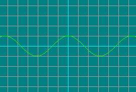
Set the angle type to "Rad"
2
sin(x+!pi/2 |
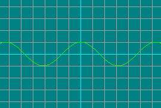
■ Trace tool
● After drawing the graph, tap inside the graph screen to obtain the Y coordinate value corresponding to the X coordinate value.
● You can confirm Y coordinate value in real time by dragging horizontally.

x= | 0.775 | |
y= | 0.7144210340559314 |
■ Hand tool
● Scroll the graph screen by dragging it.
● If "When changing the window coordinates" is set in the environment setting, graphs outside the screen are automatically generated.
● Previous graphs are deleted.

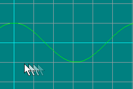
■ Box zoom tool
● When you specify and release the graph screen by dragging it, the specified area is enlarged to the graph screen size.
● If "When changing the window coordinates" is set in the environment setting, graphs are automatically regenerated.
● Previous graphs are deleted.

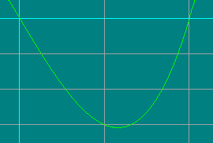
(y=x3-4*x)
■ Expansion
● You can enlarge the graph screen with the button.
● It is enlarged based on the center of the graph screen.
● If "When changing the window coordinates" is set in the environment setting, graphs are automatically regenerated. If it is not set, linear interpolation will be performed during the previous sampling data.
● Previous graphs are deleted.
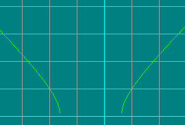
■ Reduction
● You can reduce the graph screen with the button.
● Reduced based on the center of the graph screen.
● If "When changing the window coordinates" is set in the environment setting, graphs outside the screen are automatically generated.
● Previous graphs are deleted.
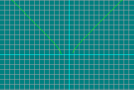
| Parametric variable |
● To draw a parametric graph, set it to "Parametric" mode.
● Enter calculation formula x=f(t) including variable t in calculation formula 1 (upper row) and calculation formula y=f(t) containing variable t in calculation formula 2 (lower row). Find the X・Y coordinate value for the variable t.
● Specify the range of the variable t in the min・max edit box and the sampling interval with the pch edit box.
■ Window settings
Press the button to display the window setting screen.
Offset specification
|
Offset X |
|
Specify the X direction position of the origin with an offset from the left of the graph screen. The unit is pixel. |
|
Offset Y |
|
Specify the Y direction position of the origin as an offset from the graph screen. The unit is pixel. |
|
Unit |
|
Specify an interval equivalent to the value 1.0 in the XY direction. The unit is pixel. |
● If set, the previous graph will be deleted.
■ To draw a graph
● Enter the calculation formula including the variable t in calculation formula 1 (upper row) and calculation formula 2 (lower row), and press the button.
● Enter the variable t with the button.
● You can omit the button input at the beginning of the calculation formula and the button input at the end.
Example 1 Cardioid
x=2*cosθ-cos(2*θ)
y=2*sinθ-sin(2*θ)
Set the angle type to "Deg"
The min value of 0.0, the max value of 360.0, set the pch value to 1.0
(x=) 22
(y=) 22
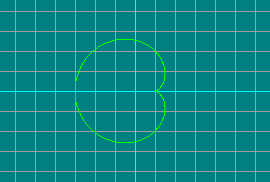
The min value of 0.0, the max value of 360.0, set the pch value to 1.0
(x=) 22
2*cos t-cos(2*t |
(y=) 22
2*sin t-sin(2*t |
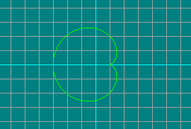
Example 2 Asteroid
| x= |
3 4 |
cosθ+ |
1 4 |
cos(3*θ) |
| y= |
3 4 |
sinθ- |
1 4 |
sin(3*θ) |
Set the angle type to "Deg"
the min value of 0.0, the max value of 360.0, set the pch value to 1.0
(x=) 34143
(y=) 34143

the min value of 0.0, the max value of 360.0, set the pch value to 1.0
(x=) 34143
3/4*cos t+1/4*cos(3*t |
(y=) 34143
3/4*sin t-1/4*sin(3*t |
■ Trace tool
● By tapping the graph screen after plotting the graph, you get the XY coordinate value closest to the tap position.
● By dragging, XY coordinate values can be confirmed in real time.
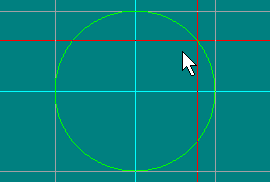
(x=sinθ, y=cosθ)
t= | 51 | |
x= | 0.7771459614569708 | |
y= | 0.6293203910498375 |
■ Hand tool
● Scroll the graph screen by dragging it.
● Previous graphs are deleted.


■ Box zoom tool
● When you specify and release the graph screen by dragging it, the specified area is enlarged to the graph screen size.
● The area is forcibly set to the aspect ratio of the graph screen.
● If "When changing the window coordinates" is set in the environment setting, graphs are automatically regenerated.
● Previous graphs are deleted.

■ Expansion
● You can enlarge the graph screen with the button.
● It is enlarged based on the center of the graph screen.
● Previous graphs are deleted.
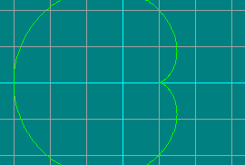
■ Reduction
● You can reduce the graph screen with the button.
● Reduced based on the center of the graph screen.
● Previous graphs are deleted.

| Polar coordinate |
● To draw a polar coordinate graph, set to "Polar" mode.
● Enter formula r=f(t) containing variable t in calculation formula 1 (upper row). Find the radius r for angle t.
● Specify the range of the angle t in the min・max edit box and the sampling interval with the pch edit box.
● min・max・pch value depends on angle designation (Deg, Rad, Grad). Also, if you change the angle designation (Deg, Rad, Grad), it will be converted automatically.
■ Window settings
Press the button to display the window setting screen.
Offset specification
|
Offset X |
|
Specify the horizontal position of the origin with the offset from the left of the graph screen. The unit is pixel. |
|
Offset Y |
|
Specify the vertical position of the origin by offset from the graph screen. The unit is pixel. |
|
Unit |
|
Specify an interval equivalent to 1.0 radius. The unit is pixel. |
● If set, the previous graph will be deleted.
■ To draw a graph
● Enter the calculation formula including the variable t in the calculation formula 1 (upper row) and press the button.
● Enter the variable t with the button.
● You can omit the button input at the beginning of the calculation formula and the button input at the end.
Example 1 Cardioid
| r=(2*cos |
θ 2 |
)2 |
Set the angle type to "Deg"
The min value of 0.0, the max value of 360.0, set the pch value to 1.0
222
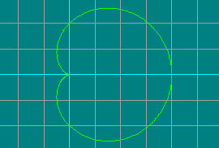
The min value of 0.0, the max value of 360.0, set the pch value to 1.0
222
pow(2*cos(t/2))2 |
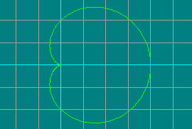
Example 2 The positive blind line r=2*sin(2*θ)
Set the angle type to "Deg"
The min value of 0.0, the max value of 360.0, set the pch value to 1.0
22
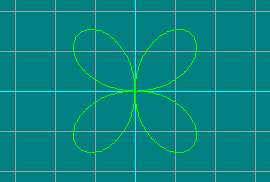
The min value of 0.0, the max value of 360.0, set the pch value to 1.0
22
2*sin(2*t |
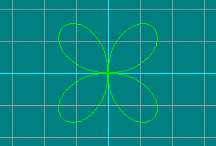
Example 3 Parabola
| r= |
1 1-cosθ |
Set the angle type to "Deg"
The min value of 0.0, the max value of 360.0, set the pch value to 1.0
11

The min value of 0.0, the max value of 360.0, set the pch value to 1.0
11
1/(1-cos t |
■ Trace tool
● By tapping the graph screen after plotting the graph, you get the data value closest to the tap position.
● By dragging, you can check the value in real time.

t= | 205 | |
r= | 1.5320888862379556 |
■ Hand tool
● Scroll the graph screen by dragging it.
● Previous graphs are deleted.

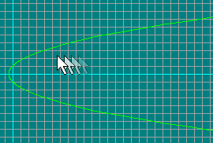
■ Box zoom tool
● When you specify and release the graph screen by dragging it, the specified area is enlarged to the graph screen size.
● The area is forcibly set to the aspect ratio of the graph screen.
● If "When changing the window coordinates" is set in the environment setting, graphs are automatically regenerated.
● Previous graphs are deleted.


■ Expansion
● You can enlarge the graph screen with the button.
● It is enlarged based on the center of the graph screen.
● Previous graphs are deleted.

■ Reduction
● You can reduce the graph screen with the button.
● Reduced based on the center of the graph screen.
● Previous graphs are deleted.
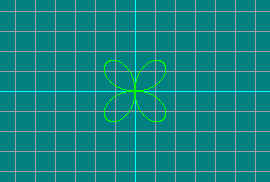
| Numerical table function |
● Press the button to display the number table screen.
● When you obtain the calculated value with the trace tool and press the button, it is registered in the number table.
button
|
Delete the selected calculation value from the numerical table. |
button
|
Draw a crosshair on the graph screen with the selected calculation value. |
| Program function |
● When you press button, the editor starts up.
● There are 26 program memories (a ~ z).
● When the program is changed, button will be displayed. Please press button to save edited contents.
● To call it as a function, use the button. It is input as a function in the calculation formula, and you can enter function parameters subsequently.
● When the button is pressed, edited contents are automatically saved.
● Variable value (@A ~ @Z) can be referenced by using command ":parent" in the program. For example, when referring to the variable @A, write it like ":parent @A".
| Technical information |
■ Priority of the calculation
It is calculated in the following ranking.
| (1) [-], ^, Function (2) *, /, % (3) +, - |
● When function are consecutive, they are executed from the right side to the left side.
exp log sqrt x → exp(log(sqrt x))
● When the operators of the same rank are consecutive, they are executed from the left side to the right side.
12+t-34+t → ((12+t)-34)+t
● When parentheses are used, parentheses take the highest priority.
■ Input range of function
| Function | Input range |
| asin x | -1≦x≦1 |
| acos x | -1≦x≦1 |
| acosh x | 1≦x |
| atanh x | -1＜x＜1 |
| ln x | 0＜x |
| log x | 0＜x |
| log10 x | 0＜x |
| sqrt x | 0≦x |
| How the button works |
■ Calculation formula input screen
|
~ Numeric button Press to enter numeric values. |
|
Negative button Press to enter a negative number. |
|
Operator button Press to enter the operator. |
|
xy Power button Press to calculate x to the yth power. |
|
Parentheses input button Press to enter parentheses. |
|
Variable button Press to enter variable x ("Linear", "X logarithm", "Y logarithm" or "Logarithmic" coordinate mode) or t ("Parametric" or "Polar" coordinate mode). |
|
Recall memory button Press to recall numerical values stored in memory. * Variables selected in advance are eligible. |
|
Space button Press to enter a space character. |
|
Delete button Press this to delete numbers or functions entered by mistake. |
|
All clear button Press to erase all in the edit box. |
|
x x x Trigonometric function button Press to calculate trigonometric functions. The value specified for the argument depends on the angle specification (Deg, Rad, Grad). |
|
x x x Inverse trigonometric functions Press to calculate the inverse trigonometric function. The result depends on angle specification (Deg, Rad, Grad). |
|
x x x Hyperbolic function Press to calculate hyperbolic function. |
|
x x x Inverse hyperbolic functions Press to calculate the inverse hyperbolic function. |
● Other internal function button
|
yx Calculate the arc tangent of y/x. The result depends on angle specification (Deg, Rad, Grad). |
|
(C language mode)x (Calculator mode)x Press to calculate natural logarithm. |
|
(C language mode)x (Calculator mode)x Press to calculate common logarithm. |
|
x calculate e to the xth power Press to calculate e to the xth power. |
|
x calculate 10 to the xth power Press to calculate 10 to the xth power. |
|
x Press to calculate the square. |
|
x Press to calculate square root. |
|
xy Press to calculate x to the yth power. |
|
x Press to calculate factorial of x. |
|
x Calculate the absolute value. |
|
x Calculate the smallest integer greater than or equal to x. |
|
x Calculate the largest integer less than or equal to x. |
|
x Press to round to an integer. |
|
x Find the real part of a complex number. |
|
x Find the imaginary part of a complex number. |
|
x Find the phase angle of a complex number. The result depends on angle specification (Deg, Rad, Grad). |
|
x Find the square of the absolute value. |
|
x Find conjugate complex numbers. |
|
rhotheta Calculate the complex value of absolute value rho and phase angle theta. theta depends on the angle specification (Deg, Rad, Grad). |
|
Generate pseudorandom numbers between 0 and 32767. |
|
Gets the current time. |
● External function button
If the button is displayed, press the button to read.
After clearing the storage or clearing the cookie, you need to press the button again.
|
Pi |
|
Base of natural logarithm |
|
val Cube root |
|
val Logarithm of base 2 |
|
nval Logarithm of base n |
|
x Computes the natural logarithm of 1+x. |
|
x Computes the e raised to the given power x, minus 1. |
|
x Computes the nearest integer not greater in magnitude than x. |
■ Graph screen
|
Trace tool Read the coordinates. |
|
Hand tool Scroll the graph screen. |
|
Box zoom tool Trim the graph screen. |
|
Enlargement button Enlarges the graph screen. |
|
Reduction button Reduce the graph screen. |
|
Window settings button Perform window setting of the graph screen. |
|
Graph drawing button Draw a graph. |
|
Clear button Clear the graph. |
|
Store button Press to register the result of tracing in a table. |
| Keyboard assignment |
| Tab | Focus switching for calculation formula 1 (upper row) and calculation formula 2 (lower row) |
| ↑ | |
| ↓ | |
| ← | |
| → | |
| 0 ～ 9 Numeric key 0 ～ 9 |
～ |
| Numeric key . . > |
|
| E | |
| Shift + E | |
| I | |
| Shift +Numeric key + ; + |
|
| Shift +Numeric key - Shift + - = |
|
| D | |
| G | |
| R | |
| Shift + 1 ! | |
| Numeric key + Shift + ; + |
|
| Numeric key - - = |
|
| Numeric key * Shift + : * |
|
| Numeric key / / ? |
|
| Shift + 5 % | |
| ^ ~ | |
| Shift + 8 ( | |
| Shift + 9 ) | |
| X T |
|
| Space | |
| Backspace Delete |
|
| Enter | |
| Shift |
| ClipGraph Copyright (C) SatisKia |